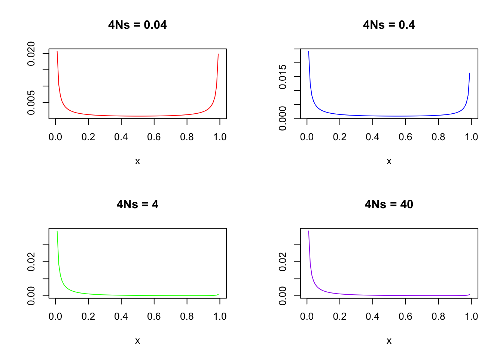
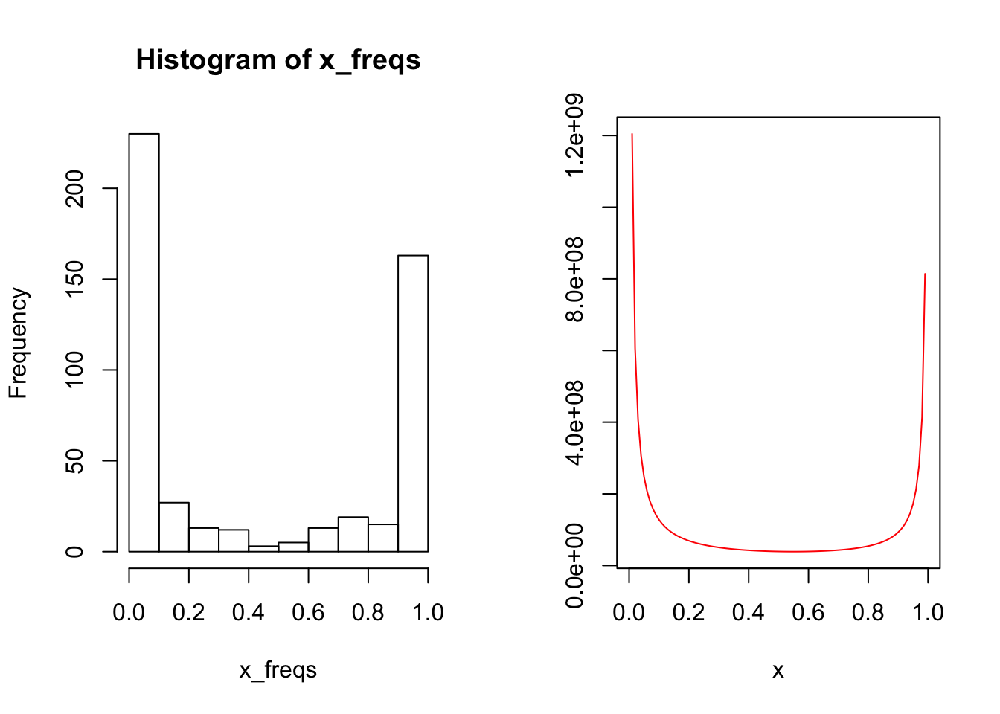
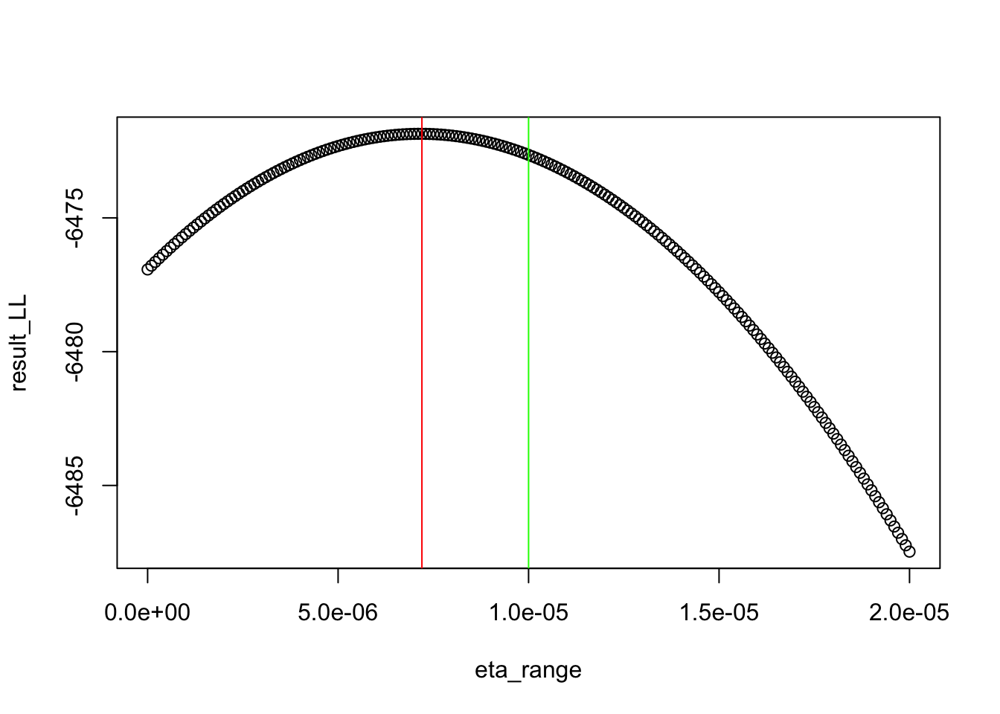
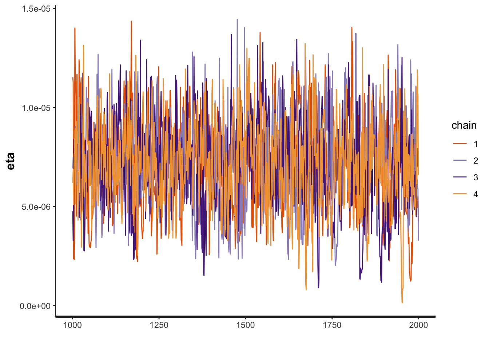
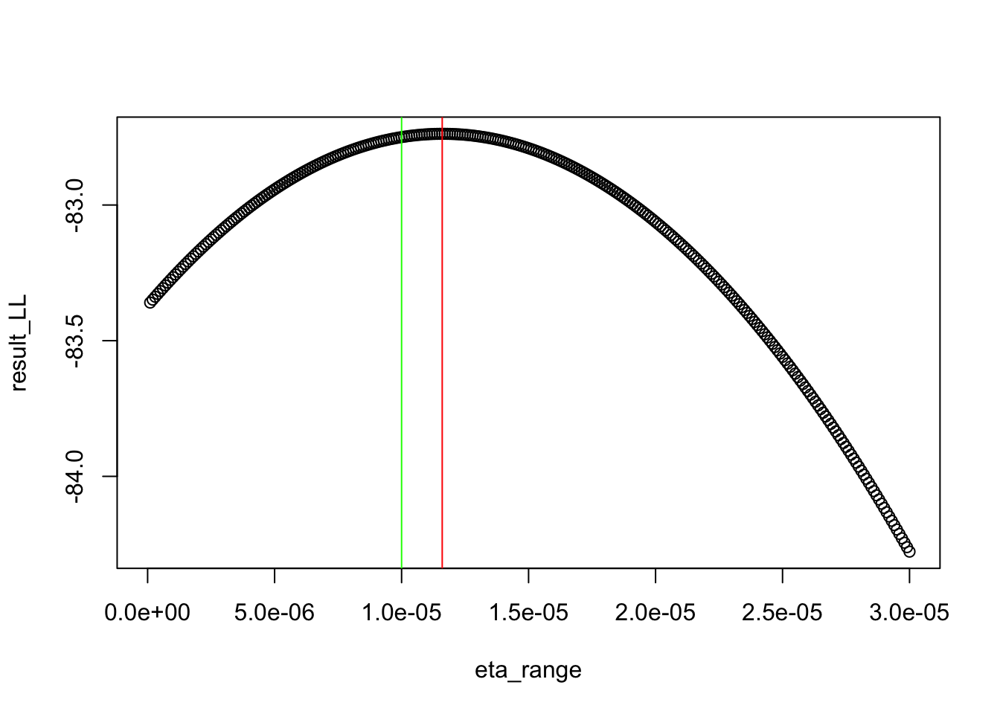
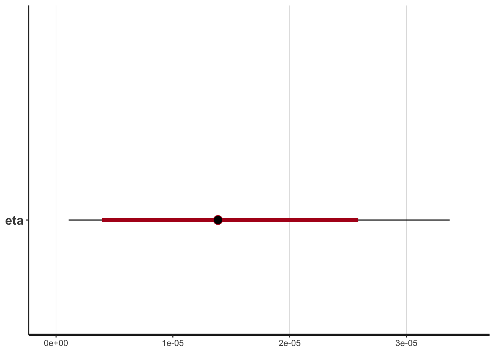
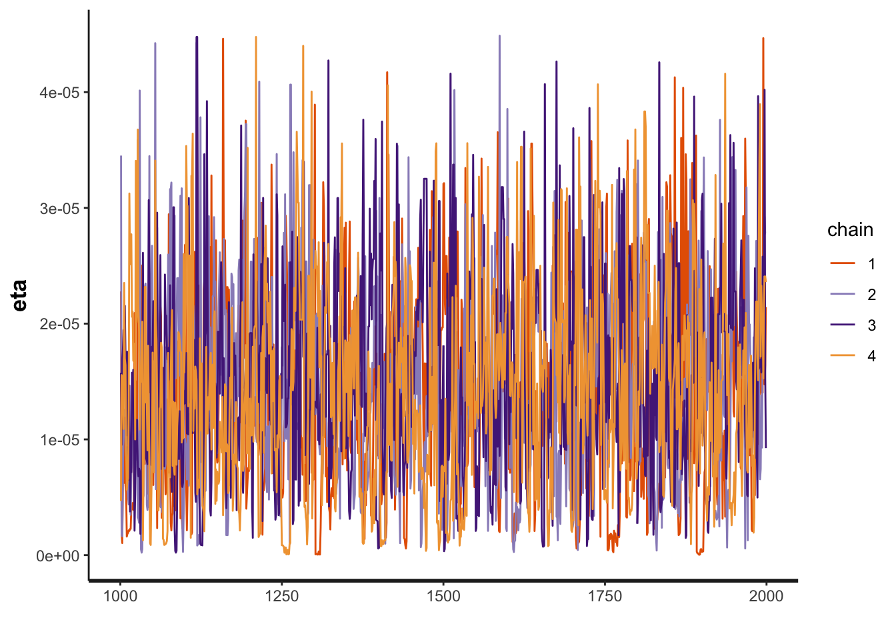
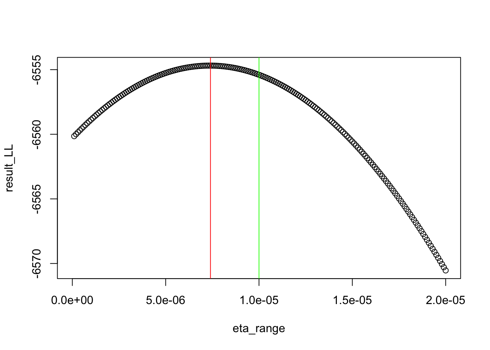
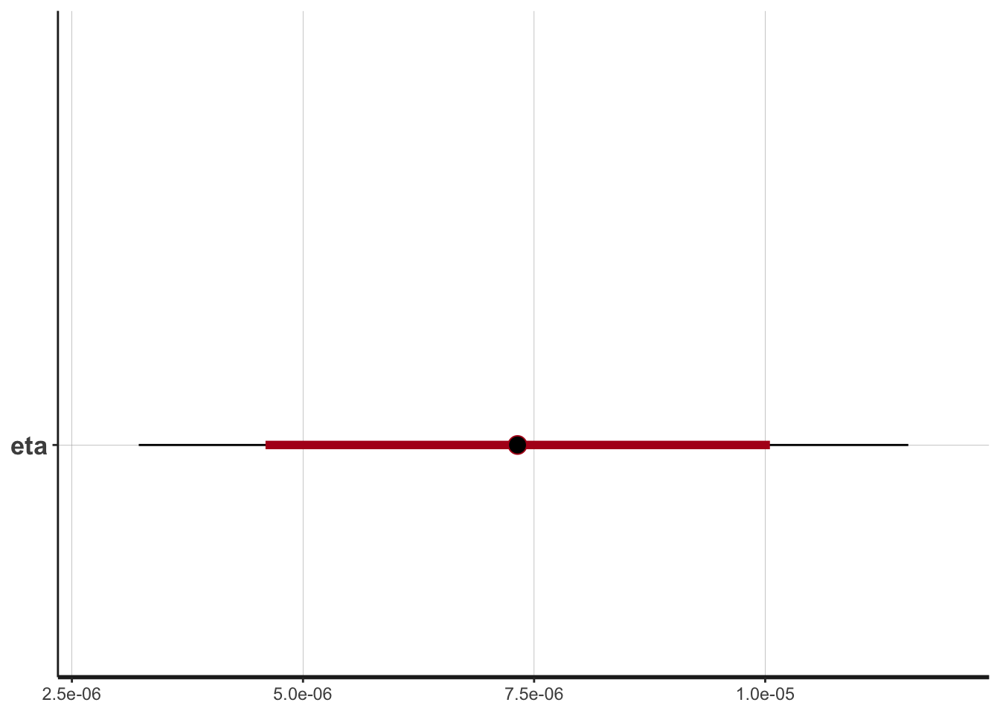
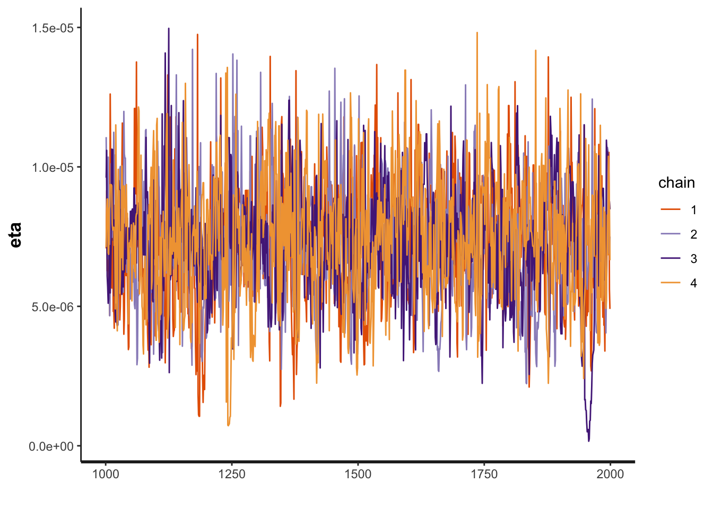

Last updated: 2020-01-14
Checks: 7 0
Knit directory: infer_mutational_bias/analysis/
This reproducible R Markdown analysis was created with workflowr (version 1.4.0). The Checks tab describes the reproducibility checks that were applied when the results were created. The Past versions tab lists the development history.
Great! Since the R Markdown file has been committed to the Git repository, you know the exact version of the code that produced these results.
Great job! The global environment was empty. Objects defined in the global environment can affect the analysis in your R Markdown file in unknown ways. For reproduciblity it’s best to always run the code in an empty environment.
The command set.seed(20191108) was run prior to running the code in the R Markdown file. Setting a seed ensures that any results that rely on randomness, e.g. subsampling or permutations, are reproducible.
Great job! Recording the operating system, R version, and package versions is critical for reproducibility.
Nice! There were no cached chunks for this analysis, so you can be confident that you successfully produced the results during this run.
Great job! Using relative paths to the files within your workflowr project makes it easier to run your code on other machines.
Great! You are using Git for version control. Tracking code development and connecting the code version to the results is critical for reproducibility. The version displayed above was the version of the Git repository at the time these results were generated.
Note that you need to be careful to ensure that all relevant files for the analysis have been committed to Git prior to generating the results (you can use wflow_publish or wflow_git_commit). workflowr only checks the R Markdown file, but you know if there are other scripts or data files that it depends on. Below is the status of the Git repository when the results were generated:
Ignored files:
Ignored: .DS_Store
Ignored: .Rhistory
Ignored: .Rproj.user/
Ignored: .snakemake/conda-archive/
Ignored: .snakemake/conda/
Ignored: .snakemake/locks/
Ignored: .snakemake/scripts/
Ignored: .snakemake/shadow/
Ignored: .snakemake/singularity/
Ignored: analysis/.DS_Store
Ignored: data/47UKBB/
Ignored: docs/.DS_Store
Ignored: output/.DS_Store
Ignored: output/47UKBB/
Untracked files:
Untracked: docs/assets/
Unstaged changes:
Deleted: analysis/figure_out_cs.Rmd
Deleted: analysis/model_overvieew.Rmd
Note that any generated files, e.g. HTML, png, CSS, etc., are not included in this status report because it is ok for generated content to have uncommitted changes.
These are the previous versions of the R Markdown and HTML files. If you’ve configured a remote Git repository (see ?wflow_git_remote), click on the hyperlinks in the table below to view them.
| File | Version | Author | Date | Message |
|---|---|---|---|---|
| Rmd | 7bfd199 | jgblanc | 2020-01-14 | Worked on inference problem |
For this project, we are interested in inferring the degree of mutational bias across traits. In order to calculate the mutational bias, we need to infer specific parameters from the data. First consider the polygenic mutation-selection balance model. In this model, the selection coefficient for each individual allele is determined by the approximation below:
\[s \approx \beta \phi(T) S\]
Here \(\beta\) is the true effect size of the allele, \(\phi(T)\) is the height of the liability threshold, and S is the fitness cost of the disease. We can think of \(\beta * \phi(T)\) as an approximation of the portion of the population pushed over the liability threshold when the protective allele is swapped to the risk allele. \(\phi(T) S\) is a compound parameter that is related to the prevalence of the disease. The larger the \(\phi(T)\) the higher the prevalence of disease (the threshold is closer to the center), the smaller the fitness cost must be. Here we will call this compound parameter \(\eta\):
\[\eta = \phi(T)S\]
In this analysis we are interested in inferring from simulated data. We will simulate data under a specific value of \(\eta\) and then use both maximum likelihood and Bayesian inference (using STAN) to infer back the value of \(\eta\), the data were generated under.
To start with we are going to make a (very) simplifying assumption that we know all the causal loci and that they all have an effect size of one (\(\beta\) = 1). W will use the poison random field model to generate the data. Under this model the probability of observing a site at a certain risk allele freq, x, is given by:
\[\Psi(x |\eta, N, \beta, \mu) = \frac{4N\mu}{x(1-x)}\frac{e^{-4 N\beta \eta x}}{1 + e^{-4N\beta \eta}}\]
Let’s plot this function for difference values of \(\eta\):
psi <- function(x, eta, B, N, mu) {
top <- exp(-4*N*eta*B*x) * (4*N*mu)
bottom <- (1 + exp(-4*N*eta*B)) * x * (1-x)
return(top/bottom)
}
par(mfrow=c(2,2))
curve(psi(x,1e-6,1,10000,1e-8), col = "red", xlim = c(0,1), ylab = "", main = "4Ns = 0.04")
curve(psi(x,1e-5,1,10000,1e-8), col = "blue", xlim = c(0,1), ylab = "", main = "4Ns = 0.4")
curve(psi(x,1e-4,1,10000,1e-8), col = "green", xlim = c(0,1), ylab = "", main = "4Ns = 4")
curve(psi(x,1e-4,1,10000,1e-8), col = "purple", xlim = c(0,1), ylab = "", main = "4Ns = 40")
We can see that for larger values of \(4Ns\) (where s = \(\beta \eta\)), the risk allele is held at lower frequencies. This intuitively makes sense and confirms that we have our signs correct in our model.
Now we want to simulate data under a specific value of \(\eta\) using inverse transform sampling.
simulate_data <- function(N, B, eta, mu, m) {
# This function will sample a set of risk allele frequencies
# Get probability that a site is segregating
denominator <- integrate(psi, (1/(4*N)), (1- (1/(4*N))), eta=eta, B=B, N=N, mu=mu)$value
# Discretize the target CDF
i_values <- seq(1/(4*N),1-(1/(4*N)), 1/(2*N))
pis <- rep(0, length(i_values))
# Integrate up to i + (0.5/2N) for all i
for (j in 1:(length(i_values)-1)) {
pis[j] <- integrate(psi, i_values[1], i_values[j+1], N=N, B=B, eta=eta, mu=mu)$value / denominator
}
# Draw from uniform
U <- runif(m)
# Find smallest i such that pi < U is true
UT <- rep(0, length(U))
for (j in 1:length(U)) {
UT[j] <- which(U[j] <= pis)[1]
}
# Calculate set of RAF
x_freqs <- UT / (2*N)
return(x_freqs)
}Now we are ready to simulate data. We will set the constant parameters we are not interested in inferring and then set \(\eta\) and simulate the data
# Constant parameters
N <- 10000
mu <- 10^-8
B <- 1
m <- 500 # Number of causal snps
# Value of eta for simuation
eta <- 1e-5
# Simulate data
x_freqs <- simulate_data(N, B, eta, mu, m)
# Look at distribution of data compared to true distribution
par(mfrow = c(1,2))
hist(x_freqs)
curve(psi(x,eta=eta,N=N,B=B, mu=m), col = "red", xlim = c(0,1), ylab = "")
Now we have data are are ready to do inference. Let’s look again at the distribution of risk alleles as stated above:
\[\Psi(x | \eta,N,\beta, \mu) = \frac{4N\mu}{x(1-x)}\frac{e^{-4 N\beta \eta x}}{1 + e^{-4N\beta \eta}}\]
We want to write the likelihood of observing our data given a set of parameters. We can do this using by integrating of probability of observing the observed allele frequency for each site and multiplying across sites:
\[L = \prod\limits_{l=1}^L P(X_i = x,| \eta, N, \beta, \mu) = \prod\limits_{l=1}^L \int\limits_{x_i-\frac{1}{4N}}^{x_i + \frac{1}{4N}} \frac{4N\mu}{x_i(1-x_i)}\frac{e^{-4 N\beta \eta x_i}}{1 + e^{-4N\beta \eta}}\]
Below is a function to calculate the log likelihood:
log_like <- function(eta, data, N, B, mu, m) {
snps <- rep(NA, m)
for (i in 1:m) {
freq <- data[i]
snps[i] <- log(integrate(psi, freq-(1/(4*N)), freq+(1/(4*N)), eta=eta, N=N, B=B, mu=mu)$value)
}
return(sum(snps))
}
log_like(data=x_freqs, N=N,B=B,mu=mu,eta=eta, m=m)[1] -6472.646Now I will try to calculate the maximum likelihood estimator in a super simple way - I’ll just try feeding in a range of eta values and seeing which one maximizes the log-likelihood.
# Start with a large range of eta values
eta_range <- seq(0, 2e-5, by=1e-7)
# Loop through and calculate the LL for each eta value
result_LL <- rep(NA, length(eta_range))
for (i in 1:length(eta_range)) {
eta_test <- eta_range[i]
result_LL[i] <- log_like(data=x_freqs, N=N, B=B, mu=mu, m=m, eta=eta_test)
}
plot(y=result_LL, x = eta_range)
abline(v = eta_range[which.max(result_LL)], col = "red")
abline(v = eta, col = "green")
print(paste0("MLE eta ", eta_range[which.max(result_LL)]))[1] "MLE eta 7.2e-06"print(paste0("True eta ", eta))[1] "True eta 1e-05"Above we got a maximum likelihood estimation for \(\eta\) using a simple grid search. Now we will try to get an estimate of \(\eta\) using a Bayesian approach using STAN. Let’s look again at the distribution of risk alleles as stated above:
\[\Psi(x | \eta, N, \beta, \mu) = \frac{4N\mu}{x(1-x)}\frac{e^{-4 N\beta \eta x}}{1 + e^{-4N\beta \eta}}\]
Using Bayes rule we can re-write this as:
\[P(\eta | x, N, \beta, \mu) = \frac{P(x| \eta, N, \beta, \mu) P(\eta)}{P(x|N, \beta, \mu)} \propto P(x| \eta, N, \beta, \mu) P(\eta)\]
Now we have a posterior distribution on eta that we can sample from using the likelihood (\(\Psi(x | \eta, N, \beta, \mu)\)) and the prior, which we for now assume to be 1. Below is the STAN program I wrote to sample from this posterior
functions {
real my_raf_lpdf(real[] x, real eta, int N, real mu, real B){ // PSI density
vector[num_elements(x)] prob;
real lprob;
for (i in 1:num_elements(x)) {
prob[i] = ((4*N*mu)/ (x[i]*(1-x[i]))) * (exp(-4*N*B*eta*x[i])/(1+exp(-4*N*B*eta)));
}
lprob = sum(log(prob));
return lprob;
}
}
data {
int<lower=0> m; // Number snps
real y[m]; // RAF
real<lower=0> mu; // mutation rate
real B; // effect size
int N; // population size
}
parameters {
real<lower=1e-20, upper=1e-3> eta; // selection
}
model {
y ~ my_raf_lpdf(eta, N, mu, B); // posterior
}
Finally we will fit the stan model and get the posterior distribution on eta
data <- list(y = x_freqs, m = m, B = B, N = N, eta=eta, mu=mu)
fit <- sampling(simple_RAF, data = data)Let’s look at the results.
print(fit)Inference for Stan model: 7c2068929a43c05cbfacfb5b39f9ddae.
4 chains, each with iter=2000; warmup=1000; thin=1;
post-warmup draws per chain=1000, total post-warmup draws=4000.
mean se_mean sd 2.5% 25% 50% 75% 97.5%
eta 0.00 0.00 0.00 0.00 0.00 0.00 0.00 0.00
lp__ -1537.53 0.03 0.82 -1539.71 -1537.74 -1537.21 -1537.02 -1536.95
n_eff Rhat
eta 858 1.00
lp__ 681 1.01
Samples were drawn using NUTS(diag_e) at Tue Jan 14 11:32:38 2020.
For each parameter, n_eff is a crude measure of effective sample size,
and Rhat is the potential scale reduction factor on split chains (at
convergence, Rhat=1).plot(fit)ci_level: 0.8 (80% intervals)outer_level: 0.95 (95% intervals)traceplot(fit,pars="eta" )
We can see that the estimate of \(/eta\) is pretty close to the true value of 1e-5.
So far we have only considered inferring \(\eta\) using the distribution of risk allele frequencies. Now we will introduce evolutionary information. The probability that the risk allele is derived is:
\[P(D|x, N, \eta, \beta) = \frac{e^{4N\beta \eta} - e^{4N\beta x}}{-1 + e^{4 N \beta \eta}}\]
Here D is an indicator variable that equals 0 if the risk allele is ancestral and 1 if the risk allele is derived. Now we want to simulate data that consists of a set of pairs of risk allele frequencies and D (if the risk allele is derived). We will use the same inverse transform sampling function from above to draw risk allele frequencies according to \(\Psi\) and then use the functions below to assign evolutionary status (risk derived or ancestral) to each allele by drawing a Bernoulli RV with probability calculate from the above equation.
# Probability that an allele is derived
derived_risk <- function(x, eta, N, B) {
one <- exp(4 * N * B * eta) - exp(4 * N * B * eta * x)
two <- -1 + exp(4 * N * B * eta)
return(one/two)
}
# 0 = Ancestral
# 1 = Derived
assign_status <- function(m,eta,N,B,x_freqs) {
status <- rep(NA, m)
for (i in 1:m) {
freq <- x_freqs[i]
p <- derived_risk(freq, eta=eta, N=N, B=B)
ind <- rbinom(1,1, p)
status[i] <- ind
}
return(status)
}Now we will assign evolutionary status to our previously simulated set of RAFs:
status <- assign_status(m, eta, N, B, x_freqs)
# Look at distribution of status data
table(status)status
0 1
209 291 Now our data is comprised of RAF stored in “x_freqs” and whether the risk allele is derived stored in “status”. We are ready to compute the likelihood:
\[L = \prod\limits_{i=1}^M \frac{e^{4N\beta eta}-e^{4N\beta eta x_i}}{-1 + e^{4N\beta eta}}\]
log_like_status <- function(eta, data_freq, data_status, N, B, m) {
snps <- rep(NA, m)
for (i in 1:m) {
freq <- data_freq[i]
stat <- data_status[i]
if (stat == 1) {
snps[i] <- log(derived_risk(x=freq, eta=eta, N=N, B=B))
} else {
snps[i] <- log(1 - derived_risk(x=freq, eta=eta, N=N, B=B))
}
}
return(sum(snps))
}
log_like_status(data_freq=x_freqs,data_status=status,N=N,B=B,eta=eta,m=m)[1] -82.74978Now let’s use a grid search to find the MLE of \(\eta\):
# Start with a large range of eta values
eta_range <- seq(0, 3e-5, by=1e-7)
# Loop through and calculate the LL for each eta value
result_LL <- rep(NA, length(eta_range))
for (i in 1:length(eta_range)) {
eta_test <- eta_range[i]
result_LL[i] <- log_like_status(data_freq=x_freqs, data_status = status, N=N, B=B, m=m, eta=eta_test)
}
plot(y=result_LL, x = eta_range)
abline(v = eta_range[which.max(result_LL)], col = "red")
abline(v = eta, col = "green")
print(paste0("MLE eta ", eta_range[which.max(result_LL)]))[1] "MLE eta 1.16e-05"print(paste0("True eta ", eta))[1] "True eta 1e-05"We now have an MLE estimate of \(\eta\). Similarly to what we did for risk allele frequency, we want to try to do Bayesian inference using STAN. We can write the posterior distribution on eta as:
\[P(\eta|x, N, \beta, D) \propto P(D|\eta, x, N, \beta) P(\eta) \]
The likelihood is the same as written above and the prior \(P(\eta)\) we will consider uniform and equal to 1. Now that we have the posterior distribution we can sample from it using STAN.
Here is the STAN program I wrote to sample from the posterior:
functions {
real my_derived_risk(real f, real eta, int N, real mu, real B){
real prob;
prob = (exp(4 * N * B * eta) - exp(4 * N * B * eta * f)) / (-1 + exp(4 * N * B * eta)) ;
return prob;
}
real my_ll_risk_lpmf(int[] s, real[] x, real eta, int N, real mu, real B){
vector[num_elements(x)] prob;
real lprob;
for (i in 1:num_elements(x)) {
if (s[i] == 0) {
prob[i] = 1 - my_derived_risk(x[i], eta, N, mu, B);
}
else {
prob[i] = my_derived_risk(x[i], eta, N, mu, B);
}
}
lprob = sum(log(prob));
return lprob;
}
}
data {
int<lower=0> m; // Number snps
real x[m]; // RAF
int s[m];
real<lower=0> mu; // mutation rate
real B; // effect size
int N; // population size
}
parameters {
real<lower=1e-20, upper=1e-3> eta; // selection
}
model {
s ~ my_ll_risk_lpmf(x, eta, N, mu, B);
}
Let’s fit the STAN model to our data
data <- list(s = status, x = x_freqs, m = m, B = B, N = N, eta=eta, mu=mu)
fit <- sampling(simple_status, data = data)Let’s look at the results
print(fit)Inference for Stan model: 4123b7045b71adaf575ac55ca21b78d4.
4 chains, each with iter=2000; warmup=1000; thin=1;
post-warmup draws per chain=1000, total post-warmup draws=4000.
mean se_mean sd 2.5% 25% 50% 75% 97.5% n_eff Rhat
eta 0.00 0.00 0.00 0.00 0.00 0.00 0.00 0.00 933 1.00
lp__ -94.51 0.03 0.88 -97.09 -94.74 -94.16 -93.93 -93.87 689 1.01
Samples were drawn using NUTS(diag_e) at Tue Jan 14 11:33:15 2020.
For each parameter, n_eff is a crude measure of effective sample size,
and Rhat is the potential scale reduction factor on split chains (at
convergence, Rhat=1).plot(fit)ci_level: 0.8 (80% intervals)outer_level: 0.95 (95% intervals)
traceplot(fit,pars="eta" )
We are doing a decent job of inferring \(/eta\) using the evolutionary status of the risk allele.
Finally we can combine both pieces of information to infer \(\eta\). To do this we simply need to factorize the likelihood:
\[L = \prod\limits_{l=1}^M P(x_i|\eta, N, \beta, \mu) P(D_i |x_i,\eta, N, \beta)\]
Let’s use this likelihood to do maximum likelihood estimation:
# Here we will calculate the log likelihood to avoid getting too small numbers
log_like_combined <- function(eta, data_freq, data_status, N, B,mu, m) {
snps <- rep(NA, m)
for (i in 1:m) {
freq <- data_freq[i]
stat <- data_status[i]
if (stat == 1) {
snps[i] <- log(derived_risk(x=freq, eta=eta, N=N, B=B))
} else {
snps[i] <- log(1 - derived_risk(x=freq, eta=eta, N=N, B=B))
}
snps[i] <- snps[i] + log(integrate(psi, freq-(1/(4*N)), freq+(1/(4*N)), eta=eta, N=N, B=B, mu=mu)$value) # RAF Info
}
return(sum(snps))
}
log_like_combined(data_freq=x_freqs,data_status=status,N=N,B=B,eta=eta,m=m, mu=mu)[1] -6555.396Now let’s use a grid search to find the MLE of \(\eta\):
# Start with a large range of eta values
eta_range <- seq(0, 2e-5, by=1e-7)
# Loop through and calculate the LL for each eta value
result_LL <- rep(NA, length(eta_range))
for (i in 1:length(eta_range)) {
eta_test <- eta_range[i]
result_LL[i] <- log_like_combined(data_freq=x_freqs, data_status = status, N=N, B=B, m=m, eta=eta_test, mu=mu)
}
plot(y=result_LL, x = eta_range)
abline(v = eta_range[which.max(result_LL)], col = "red")
abline(v = eta, col = "green")
print(paste0("MLE eta ", eta_range[which.max(result_LL)]))[1] "MLE eta 7.4e-06"print(paste0("True eta ", eta))[1] "True eta 1e-05"Finally, we will again use STAN to sample from the factorized posterior:
\[P(X,D|\eta,N, B, \mu) \propto P(X|\eta,N, B,\mu)P(D|\eta, N, B)\]
functions {
real my_derived_risk(real f, real eta, int N, real mu, real B){
real prob;
prob = (exp(4 * N * B * eta) - exp(4 * N * B * eta * f)) / (-1 + exp(4 * N * B * eta)) ;
return prob;
}
real my_ll_risk_lpmf(int[] s, real[] x, real eta, int N, real mu, real B){
vector[num_elements(x)] prob;
real lprob;
for (i in 1:num_elements(x)) {
if (s[i] == 0) {
prob[i] = 1 - my_derived_risk(x[i], eta, N, mu, B);
}
else {
prob[i] = my_derived_risk(x[i], eta, N, mu, B);
}
}
lprob = sum(log(prob));
return lprob;
}
real my_raf_lpdf(real[] x, real eta, int N, real mu, real B){ // PSI density
vector[num_elements(x)] prob;
real lprob;
for (i in 1:num_elements(x)) {
prob[i] = ((4*N*mu)/ (x[i]*(1-x[i]))) * (exp(-4*N*B*eta*x[i])/(1+exp(-4*N*B*eta)));
}
lprob = sum(log(prob));
return lprob;
}
}
data {
int<lower=0> m; // Number snps
real x[m]; // RAF
int s[m];
real<lower=0> mu; // mutation rate
real B; // effect size
int N; // population size
}
parameters {
real<lower=1e-20, upper=1e-3> eta; // selection
}
model {
s ~ my_ll_risk_lpmf(x, eta, N, mu, B);
x ~ my_raf_lpdf(eta, N, mu, B);
}
Let’s fit the STAN model to our data
data <- list(s = status, x = x_freqs, m = m, B = B, N = N, eta=eta, mu=mu)
fit <- sampling(simple_combined, data = data)Let’s look at the results
print(fit)Inference for Stan model: 1346f250088debed42623f74aa29a4d9.
4 chains, each with iter=2000; warmup=1000; thin=1;
post-warmup draws per chain=1000, total post-warmup draws=4000.
mean se_mean sd 2.5% 25% 50% 75% 97.5% n_eff
eta 0.00 0.00 0.00 0.0 0.0 0 0.00 0.00 1037
lp__ -1620.32 0.04 0.86 -1622.6 -1620.5 -1620 -1619.81 -1619.76 500
Rhat
eta 1.00
lp__ 1.01
Samples were drawn using NUTS(diag_e) at Tue Jan 14 11:33:54 2020.
For each parameter, n_eff is a crude measure of effective sample size,
and Rhat is the potential scale reduction factor on split chains (at
convergence, Rhat=1).plot(fit)ci_level: 0.8 (80% intervals)outer_level: 0.95 (95% intervals)
traceplot(fit,pars="eta" )
sessionInfo()R version 3.5.1 (2018-07-02)
Platform: x86_64-apple-darwin15.6.0 (64-bit)
Running under: macOS High Sierra 10.13.6
Matrix products: default
BLAS: /Library/Frameworks/R.framework/Versions/3.5/Resources/lib/libRblas.0.dylib
LAPACK: /Library/Frameworks/R.framework/Versions/3.5/Resources/lib/libRlapack.dylib
locale:
[1] en_US.UTF-8/en_US.UTF-8/en_US.UTF-8/C/en_US.UTF-8/en_US.UTF-8
attached base packages:
[1] stats graphics grDevices utils datasets methods base
other attached packages:
[1] rstan_2.19.2 ggplot2_3.2.1 StanHeaders_2.19.0
loaded via a namespace (and not attached):
[1] Rcpp_1.0.3 compiler_3.5.1 pillar_1.4.2
[4] git2r_0.25.2 workflowr_1.4.0 prettyunits_1.0.2
[7] tools_3.5.1 pkgbuild_1.0.6 digest_0.6.22
[10] evaluate_0.14 lifecycle_0.1.0 tibble_2.1.3
[13] gtable_0.3.0 pkgconfig_2.0.3 rlang_0.4.1
[16] cli_1.1.0 parallel_3.5.1 yaml_2.2.0
[19] xfun_0.7 loo_2.1.0 gridExtra_2.3
[22] withr_2.1.2 stringr_1.4.0 dplyr_0.8.1
[25] knitr_1.23 fs_1.3.1 stats4_3.5.1
[28] rprojroot_1.3-2 grid_3.5.1 tidyselect_0.2.5
[31] inline_0.3.15 glue_1.3.1 R6_2.4.1
[34] processx_3.4.1 rmarkdown_1.13 farver_2.0.1
[37] callr_3.3.2 purrr_0.3.2 magrittr_1.5
[40] whisker_0.3-2 codetools_0.2-16 matrixStats_0.55.0
[43] ps_1.3.0 backports_1.1.5 scales_1.1.0
[46] htmltools_0.3.6 assertthat_0.2.1 colorspace_1.4-1
[49] labeling_0.3 stringi_1.4.3 lazyeval_0.2.2
[52] munsell_0.5.0 crayon_1.3.4